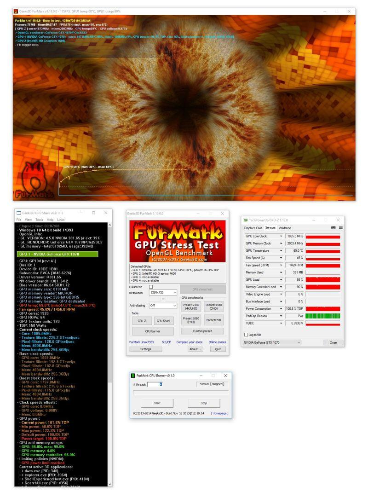
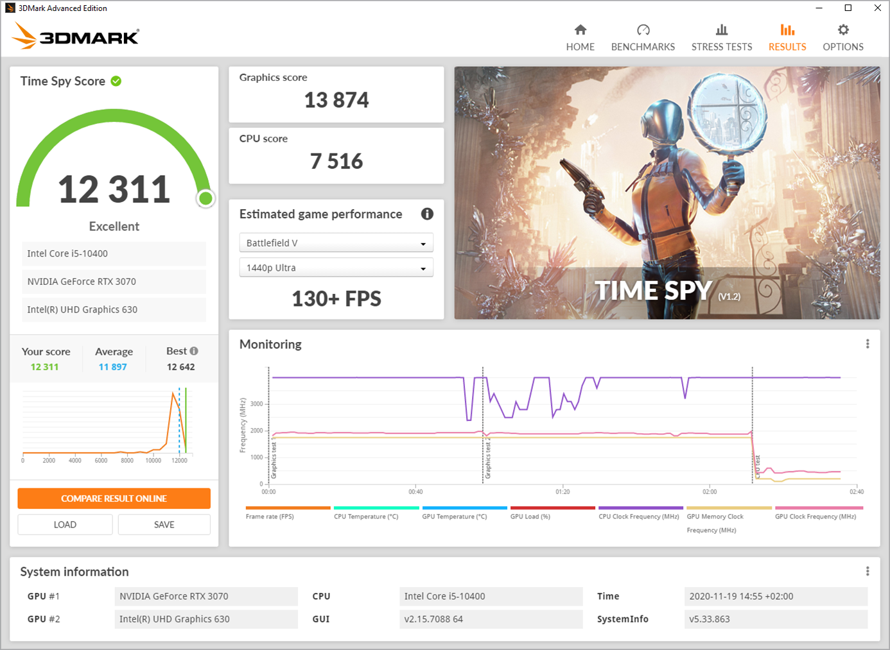
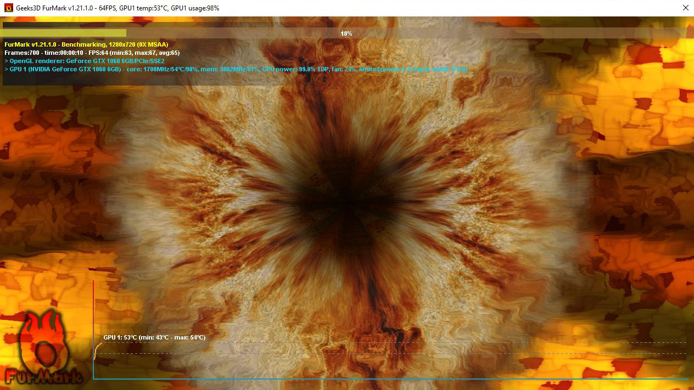
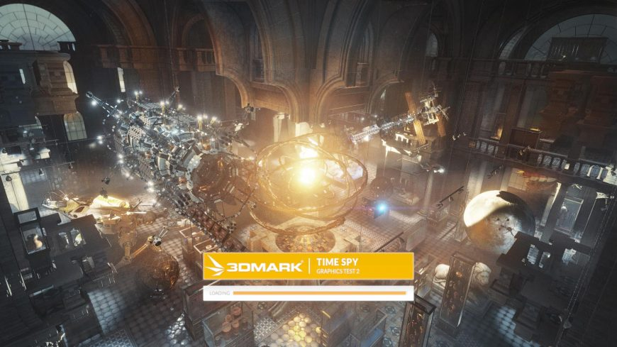
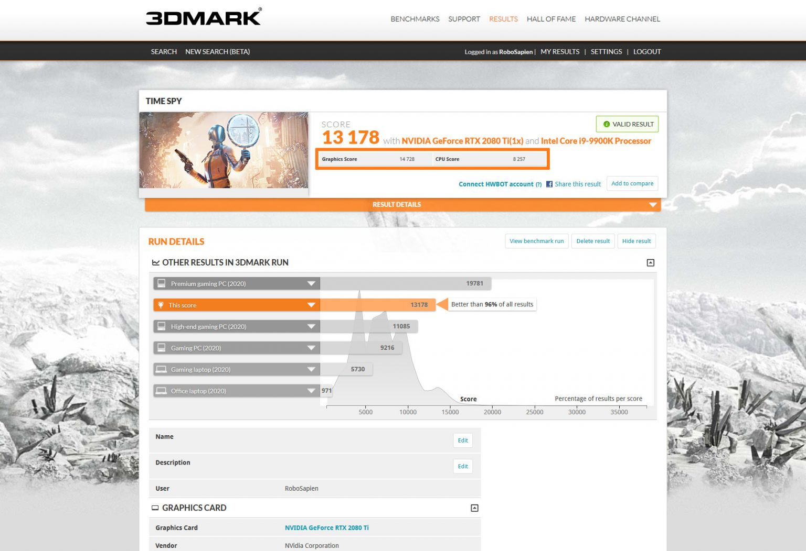
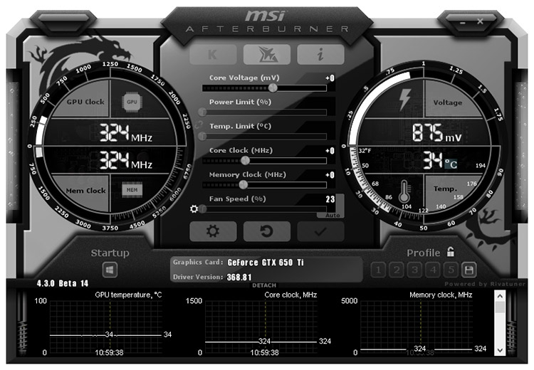

Здесь предоставлен список программ необходимых для проверки и ремонта видеокарт
3DMark и FurMark
Это наиболее популярные и проверенные программы для проверки производительности видеокарт. FurMark крайне простая в использовании утилита, да при том ещё и бесплатная. А вот на 3DMark уже придется раскошелиться, в отличии от FurMark имеет 7 синтетических тестов производительности. Для нас эти программы будут полезны т.к. позволяют довести видеокарту до пиковой нагрузки и проверить, не отпадет ли какой-либо элемент, вследствии плохой пайки или прогрева. FurMark можно скачать здесь. А 3DMark здесь.
 В главном меню FurMark доступна секция «GPU benchmarks» с 4-мя тестами по умолчанию (720p, 1080p, 1440р и 2160p) и отдельным пунктом ручной настройки тестирования «Custom present». Секция тестов «по умолчанию» работает в том случае, если ваш монитор поддерживает данное разрешение. Для тестов в более высоком разрешении или там, где такое разрешение недоступно настройками монитора, следует воспользоваться блоком «ручных настроек» тестирования. Во время запуска, программа выведет информационное окно с предупреждением о том, что во время тестирования будет очень высокая нагрузка на видеокарту и работа системы может быть нестабильной, или компьютер может даже выключиться. Соглашаемся с предупреждением и нажимаем кнопку «GO!». На верхней части экрана будет отображена информация о состоянии видеокарты. В нижней части будет строиться график изменения температуры видеокарты.
После запуска 3DMark вас встретит главное меню программы с краткой информацией о системе и возможностью быстрого запуска первого бенчмарка «Time Spy». Переходим в меню «Тесты» и выбираем тест «Time Spy». Начнется подготовка и последующий запуск теста. После окончания теста вы увидите общее количество очков, которые рассчитал 3DMark на основе результатов каждого отдельно взятого теста.
 MSI Afterburner
Незаменимый друг любого владельца компьютера. Эта утилита предоставляет функции регулировки напряжения отдельных элементов видеокарты, что может помочь при нестабильной работе видеокарты или если вы пытаетесь получить от неё максимум. Так же может выдавать подробную информацию об аппаратных компонентах компьютера. Скачать данную утилиту можно здесь.
MATS/MODS
Mats — это программа для диагностики памяти видеокарт Nvidia. Помогает выявлять проблемные чипы памяти, которые проявляются появлением кодов ошибок 10 или 43.
Для диагностики, нужно создать загрузочную флэшку с mats. Как это сделать и как сделать диагностику можно узнать здесь.